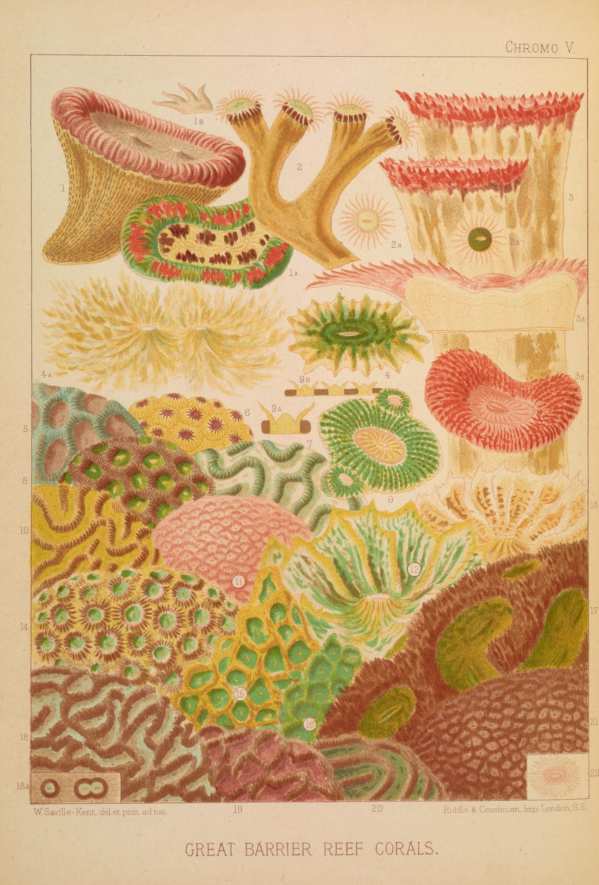

Queensland · 1893
William Saville-Kent spent the years around 1890 as Commissioner of Fisheries for Queensland, and much of that time on the reef itself: on the flats at low spring tides, when the corals stand clear of the water for an hour, and at his tanks, where he kept living colonies long enough to draw them with their polyps out. Dead coral is white and every collector knew it. What he wanted to show in London was the colour, which fades within hours of a coral leaving the sea, so he painted them alive, in watercolour, and wrote under each plate del. et pinx. ad nat.: drawn and painted from nature.
The book came out in 1893, a heavy quarto with photographs of the reef flats and sixteen plates in colour. The colour plates were not photographs and not hand-painted. They were chromolithographs, printed by Riddle & Couchman of London from his watercolours, one colour at a time, each colour from its own slab of limestone.

A lithographic stone is fine Bavarian limestone, ground flat and then grained with sand until it has a tooth like paper. The printer's artist traced the outline of the whole picture, the key, and offset a print of it in red chalk onto each of the other stones as a guide. Then, stone by stone, he drew only what would take one ink: on the yellow stone every part of the plate where yellow lies, in greasy crayon, pressing harder where it should be stronger. The grain breaks the crayon into specks, which is why every colour here, seen close, is a scatter of dots on the paper, and why one ink laid over another makes a third without ever blending.
To print, the stone was damped, rolled up with ink that would stick only to the grease, and the sheet laid on it against the register pins. The bed was cranked under a fixed scraper, so the impression travelled down the sheet as a line. The whole edition went through on one stone and was left to dry before the next stone went on the press, so a printer could hold up a sheet halfway through and see a reef that was only yellow and pink, with no edges yet and no shadow. The greens came from blue over yellow, the deep red-browns of the brain corals from several passes on top of each other, and the drawing only became sharp with the darkest stone, the last one, which sat crisp on everything beneath it.
Nothing on a stone could be corrected once the edition was under way, and every stone had to fall on the same pins as the last, to within a hair, or each coral would be edged with a thin line of the wrong colour. Look closely at any plate of the period and you can find where they missed. Here they mostly did not. A coral in a museum drawer is a white skeleton; this was the reef as Saville-Kent saw it at low water, with the animals out, and for most people in England it was the first colour they had seen of a living reef.